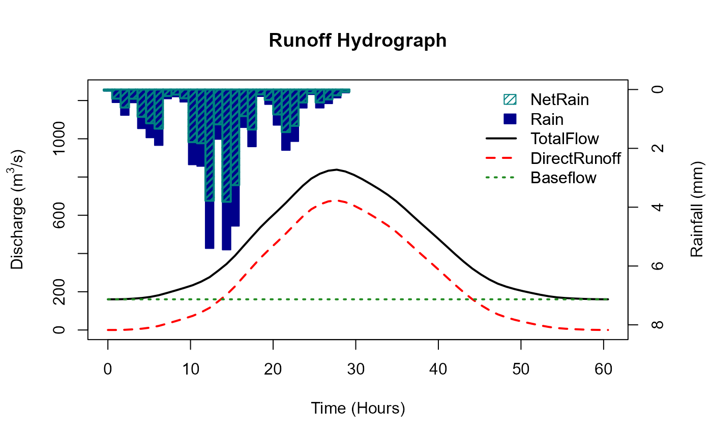

The ReFH() function
This quick guide provides an overview of how to generate a design hydrograph using the ReFH method. It is assumed that the reader has knowledge of the theory of the ReFH method; this guide is intended to demonstrate how to use the UKFE package rather than to explain the method.
The ReFH() function is designed for flexibility and each
parameter of the model, along with the inputs and initial conditions,
can be user-defined. By default, when catchment descriptors are
provided, the ReFH function uses these descriptors to estimate the
parameters of the ReFH model, and an estimate of the two-year rainfall
for the critical duration (the two year rainfall is approximated from
the RMED catchment descriptors). When catchment descriptors are applied,
individual parameters and settings can still be adjusted by the user and
these adjustments override the estimates from the catchment descriptors.
Further details can be found in the function’s help file.
This function applies the ReFH model as specified by Kjeldsen (2007). The ReFH model has since been updated to address some of the limitations. The updated version(s), known as ReFH2, was developed by Wallingford Hydro Solutions (2019) and is available for a licence fee. Henceforth, the original model is denoted ReFH1, and the term ‘ReFH’ is used when the comment applies to the original and updated versions.
The ReFH outputs are commonly used only to derive a reasonable hydrograph shape. This shape is then scaled to match the peak flow estimate derived using other methods (usually FEH statistical methods). An example of doing this with the function is provided below. There is no automated way of doing so within the function but ReFH parameters can be calibrated using observed rainfall and data to replicate storm events.
Assumptions and limitations of the ReFH1 model are provided at the bottom after the example of how to derive a design hydrograph.
Derive a design hydrograph using the ReFH method
In the following example, the ReFH() function is used to derive a design hydrograph, i.e., a hydrograph shape scaled to our design flood estimate (assuming the site to be ungauged). The default use of ReFH() with the catchment descriptors provides the rainfall-runoff outputs for an estimate of the two-year design rainfall event:
# Obtain catchment descriptors for NRFA gauge 55002
CDs.55002 <- GetCDs(55002)
# Obtain outputs of the ReFH model from catchment descriptors for a default 2-year
# rainfall event
ReFHResult55002 <- ReFH(CDs.55002)![Runoff hydrograph showing rainfall inputs and resulting flow components. The x-axis shows time in hours. The left y-axis shows discharge, and the right y-axis shows rainfall in millimetres. Rainfall is shown as inverted filled blue bars along the top of the plot, and net rainfall as inverted green striped bars; rainfall is consistently greater than net rainfall, both rising and peaking around 15 hours. Flow is shown as lines: total flow in solid black, baseflow in short dashed green, and direct runoff in dashed red. Total flow and direct runoff peak later than rainfall, with sharp peaks at around 30 hours, while baseflow lags further and peaks more broadly at about 47 hours. The total flow reaches the highest magnitude, followed by direct runoff, with baseflow peaking at much lower levels in a flatter, wider shape.](ReFH-analysis_files/figure-html/unnamed-chunk-2-1.png)
# print to console
ReFHResult55002
#> [[1]]
#> AREA TP Duration BR BL Cmax Cini BFini Season Depth Timestep
#> 1 1890 12.8 29.8 1.13 62.6 306 138 160 winter 41.3 1.025998
#> DurationFinal PeakFlow
#> 1 29.8 658
#>
#> [[2]]
#> Time_hrs Rain NetRain Runoff Baseflow TotalFlow
#> 1 0.000000 0.290 0.131 0.000 160 160
#> 2 1.025998 0.353 0.160 0.141 160 161
#> 3 2.051997 0.430 0.195 0.593 160 161
#> 4 3.077995 0.523 0.238 1.420 160 162
#> 5 4.103993 0.635 0.290 2.710 161 163
#> 6 5.129992 0.771 0.354 4.570 161 165
#> 7 6.155990 0.936 0.432 7.110 161 168
#> 8 7.181988 1.130 0.527 10.500 161 171
#> 9 8.207987 1.370 0.644 14.900 161 176
#> 10 9.233985 1.660 0.786 20.600 161 182
#> 11 10.259984 2.000 0.960 27.700 162 190
#> 12 11.285982 2.400 1.170 36.800 162 199
#> 13 12.311980 2.880 1.430 48.100 163 211
#> 14 13.337979 3.400 1.720 62.200 164 226
#> 15 14.363977 3.740 1.940 79.200 165 245
#> 16 15.389975 3.400 1.800 99.500 167 266
#> 17 16.415974 2.880 1.550 123.000 169 292
#> 18 17.441972 2.400 1.320 150.000 171 321
#> 19 18.467970 2.000 1.110 178.000 174 352
#> 20 19.493969 1.660 0.931 208.000 177 385
#> 21 20.519967 1.370 0.777 239.000 181 420
#> 22 21.545965 1.130 0.647 269.000 186 455
#> 23 22.571964 0.936 0.537 299.000 190 489
#> 24 23.597962 0.771 0.445 328.000 196 523
#> 25 24.623960 0.635 0.368 354.000 201 555
#> 26 25.649959 0.523 0.304 377.000 207 584
#> 27 26.675957 0.430 0.250 396.000 214 610
#> 28 27.701956 0.353 0.206 410.000 220 630
#> 29 28.727954 0.290 0.170 418.000 227 645
#> 30 29.753952 0.000 0.000 420.000 234 654
#> 31 30.779951 0.000 0.000 418.000 240 658
#> 32 31.805949 0.000 0.000 411.000 247 658
#> 33 32.831947 0.000 0.000 401.000 253 654
#> 34 33.857946 0.000 0.000 388.000 258 647
#> 35 34.883944 0.000 0.000 373.000 264 637
#> 36 35.909942 0.000 0.000 357.000 269 626
#> 37 36.935941 0.000 0.000 339.000 273 612
#> 38 37.961939 0.000 0.000 320.000 278 598
#> 39 38.987937 0.000 0.000 301.000 282 583
#> 40 40.013936 0.000 0.000 283.000 285 567
#> 41 41.039934 0.000 0.000 264.000 288 552
#> 42 42.065932 0.000 0.000 246.000 291 537
#> 43 43.091931 0.000 0.000 229.000 293 522
#> 44 44.117929 0.000 0.000 213.000 295 508
#> 45 45.143928 0.000 0.000 197.000 296 494
#> 46 46.169926 0.000 0.000 183.000 298 480
#> 47 47.195924 0.000 0.000 169.000 299 467
#> 48 48.221923 0.000 0.000 155.000 299 455
#> 49 49.247921 0.000 0.000 142.000 300 442
#> 50 50.273919 0.000 0.000 130.000 300 430
#> 51 51.299918 0.000 0.000 117.000 300 418
#> 52 52.325916 0.000 0.000 106.000 300 406
#> 53 53.351914 0.000 0.000 94.500 299 394
#> 54 54.377913 0.000 0.000 83.600 299 382
#> 55 55.403911 0.000 0.000 73.200 298 371
#> 56 56.429909 0.000 0.000 63.300 297 360
#> 57 57.455908 0.000 0.000 53.800 296 350
#> 58 58.481906 0.000 0.000 45.000 295 340
#> 59 59.507904 0.000 0.000 36.900 293 330
#> 60 60.533903 0.000 0.000 29.700 292 321
#> 61 61.559901 0.000 0.000 23.700 290 314
#> 62 62.585900 0.000 0.000 18.600 288 307
#> 63 63.611898 0.000 0.000 14.500 287 301
#> 64 64.637896 0.000 0.000 11.100 285 296
#> 65 65.663895 0.000 0.000 8.400 283 291
#> 66 66.689893 0.000 0.000 6.220 281 287
#> 67 67.715891 0.000 0.000 4.490 279 284
#> 68 68.741890 0.000 0.000 3.140 277 280
#> 69 69.767888 0.000 0.000 2.100 275 278
#> 70 70.793886 0.000 0.000 1.320 274 275
#> 71 71.819885 0.000 0.000 0.752 272 273
#> 72 72.845883 0.000 0.000 0.364 270 270
#> 73 73.871881 0.000 0.000 0.122 268 268The output that is printed to the console is a list with two elements. The first element is a data frame of parameters, settings, initial conditions, the catchment area, and peakflow. The second is a data frame with the following columns: Time, Rain, NetRain, Runoff, Baseflow and TotalFlow. A runoff hydrograph plot is also produced.
Scaled ReFH hydrograph
To scale the hydrograph to the design flow estimate, the results from the ungauged pooling can be used (assuming this is for the ungauged case). We can use the estimate from the FEH statistical analysis vignette:
# Create an ungauged pooling group for site 55002
PoolUG.55002 <- Pool(CDs.55002, exclude = 55002)
# Estimate QMED for site 55002 using catchment descriptors and two donor gauges
CDsQmed.55002 <- QMED(CDs.55002, DonorIDs = c(55007, 55016))
# Estimate design flows using the above pooling group and QMED
Results55002 <- PoolEst(PoolUG.55002, QMED = CDsQmed.55002, CDs = CDs.55002)The results are in the form of a list. The first element provides the return levels, and the 100-year flow estimate is in the 8th row in the second column. We’ll make it an object and use it to scale the hydrograph:
# Extract the 100-year flow estimate (the [[1]] denotes the first element of the list - which is a dataframe, then [8,2] is the 8th row and 2nd column of that dataframe)
Q100.55002 <- Results55002[[1]][8, 2]
# Obtain the final flow outputs of the ReFH model from catchment descriptors for a default 2-year
# rainfall
TotalFlow <- ReFHResult55002[[2]]$TotalFlow
#Scale this by dividing by the maximum of the flow
ScaledFlow <- TotalFlow / max(TotalFlow)
#Multiply the scaled flow by our peak flow estimate and plot
plot(ScaledFlow * Q100.55002, type = "l", lwd = 2, ylab = "Discharge (m3/s)", xlab = "Time (hours)")Exporting results
For use outside of ‘R’, these outputs can be saved as objects and then written to CSV files:
# Save the ReFH design hydrograph to an object called 'DesignHydro55002'.
DesignHydro55002 <- ScaledFlow * Q100.55002
# Write to csv
write.csv(DesignHydro55002, "my/file/path/DesHydro55002.csv", row.names = FALSE)Note in these examples that row.names = FALSE in the
write.csv() function: our data has no row names, so this
prevents an index column being added to the CSV.
ReFH function as a flexible design rainfall funoff tool
By default this ReFH function is the orginal ReFH model as described by Kjeldsen (2007). Also by default the Flood Studies Report (FSR) rainfall profiles are applied. However, it has many options, including the ability to provide rainfall or choose a randomised profile. Furthermore, the main components can be adjusted such as the unit hydrograph shape, the baseflow, and the loss. For example, if you set UHShape = “FSR”, BR = 0, and Loss = 0.5 (or some other proportion), the FSR/FEH design rainfall runoff model is the result. You can also set UrbanLoss = TRUE, and the urban loss model as used in the ReFH2.3 software is applied.
ReFH.FSR <- ReFH(CDs.55002, RainProfile = "Centre", UHShape = "FSR", Loss = 0.3, BR = 0)
ReFH overview, assumptions and limitations
The ReFH model has three components that conceptualise the catchment process.
Model structure:
- A loss model to account for hydrological processes such as evaporation, soil moisture storage, groundwater recharge and interception losses.
- A unit hydrograph-based routing model to distribute the net rainwater over time at the catchment outlet (runoff).
- A baseflow model which determines the proportion of the runoff which becomes baseflow recharge and specifies the exponential decay of the river flow once the net rainfall has been routed through the catchment outlet.
Loss model
The loss model quantifies, for each timestep of rainfall, the proportion of the rain that is effective (the rain that forms the runoff hydrograph). It does so by assuming a maximum catchment soil moisture capacity in mm (Cmax) and an initial catchment soil moisture content in mm (Cini). The original ReFH report (Kjeldsen, 2007) suggests that the Cini / Cmax (Cini divided by Cmax) can be conceptualised as the initial proportion of the catchment that is saturated, and the initial rainfall on this saturated area will form the storm hydrograph. It is assumed that the proportion of rain becoming effective is the same as this saturated proportion.
As rainfall is added, catchment soil moisture increases and Cini / Cmax becomes Ct / Cmax, i.e. the soil moisture for the given timestep divided by the Cmax is the proportion of rain for each timestep which becomes effective.
Runoff routing model (unit hydrograph)
The unit hydrograph (UH) model is a well-established method for routing effective rainfall to the catchment outlet (Sherman, 1932). There are a number of assumptions:
- There is a direct proportional relationship between the effective rainfall and the surface runoff.
- The property of superposition. That is, if two successive amounts of
effective rainfall, then the surface runoff is the sum of the two
associated unit hydrographs (the second one being ahead by one
timestep).
- The UH does not change over time.
- The UH shape is the same for all catchments. Only the time to peak and the associated base of the UH changes between catchments.
- The catchment rainfall is spatially homogeneous.
- The rainfall in a given timestep has a constant intensity.
Baseflow model
The baseflow model assumes that the saturated area of the catchment that produces surface runoff is the same area that also produces the baseflow recharge. The assumption is that the ratio of recharge to runoff is fixed (the BR parameter). A further parameter, baseflow lag (BL), ensures that the resulting baseflow hydrograph is lagged behind that of the runoff hydrograph (effectively providing a slow flow component). However, this baseflow model does not consider the volume of rainfall directly in the same way the unit hydrograph component does. The resulting baseflow hydrograph is in addition to the runoff hydrograph volume and is calculated as a proportion of it. This means that the volume of the total hydrograph minus initial baseflow is greater than the net/effective rainfall. For the most part, this is not a significant problem because it is assumed that some of the remaining volume of the rainfall makes up the difference. However, if the proportion of effective rainfall is closer to one, the volume of the hydrograph can be greater than the gross/total input of rainfall. This will almost certainly not happen unless the event duration is considerably longer than recommended and only in catchments with a high initial proportion of saturation (due to low BFIHOST and high PROPWET). However, this ReFH function has a WaterBalance argument and setting it to TRUE means that the water balance cannot be invalidated because BR is capped such that BR = (1/NetProp)-1, NetProp is the proportion of effective rainfall.
Use cases for the ReFH() function
There are three primary use cases:
- A flexible tool to model the catchment response to event rainfall.
- A tool for estimating the T-year flow as a function of the T-year rainfall.
- To develop a plausible hydrograph shape for scaling to peak flow estimates (usually for the purposes of developing a model boundary).